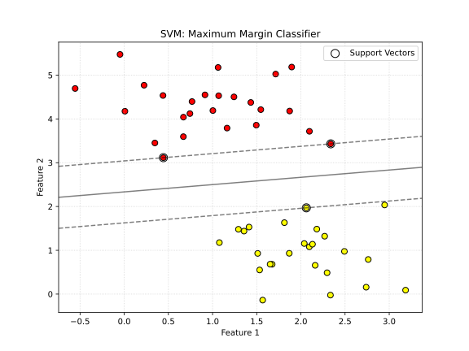
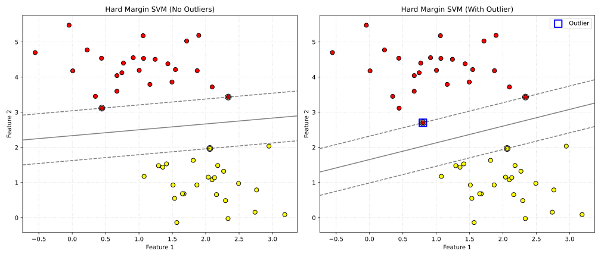
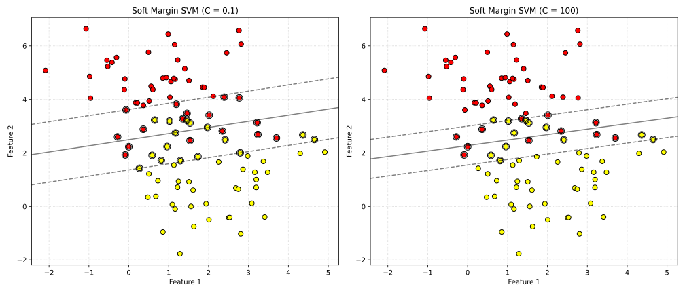
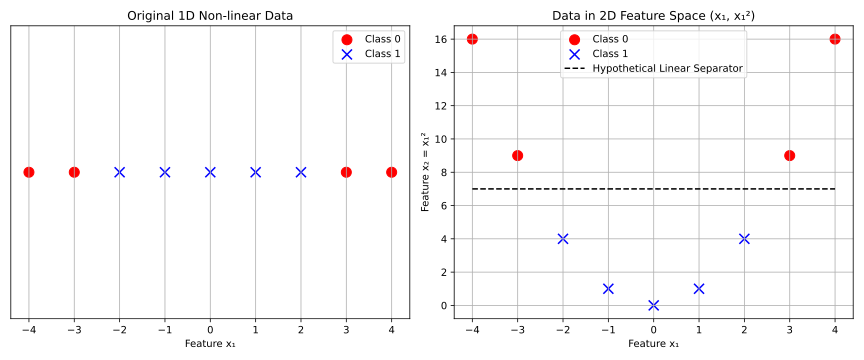
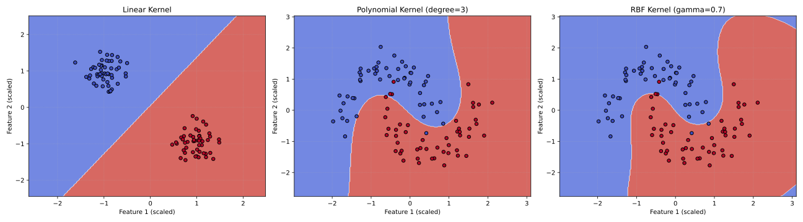
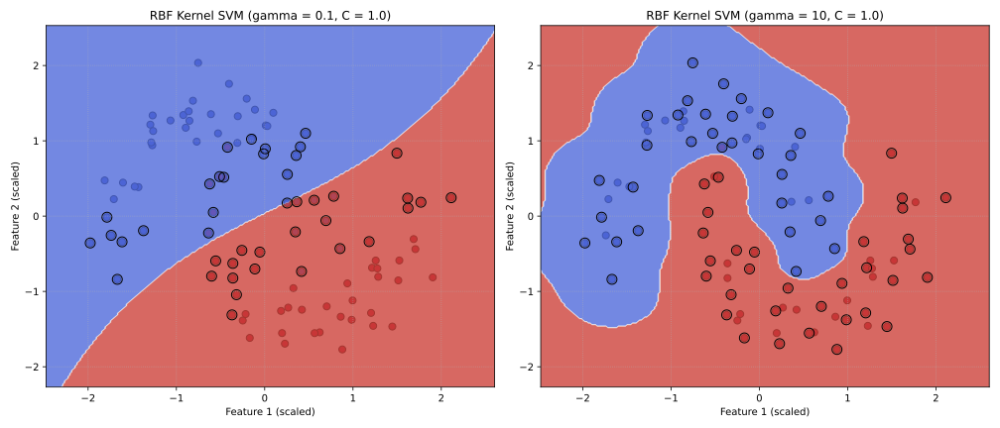
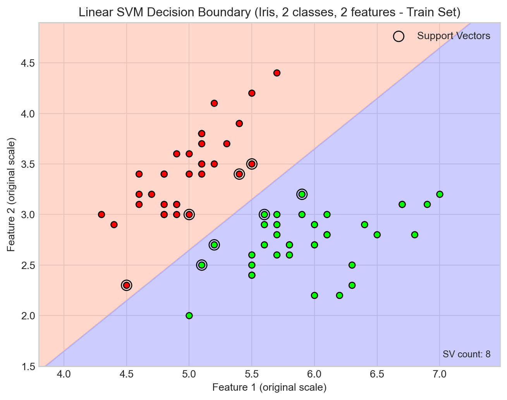
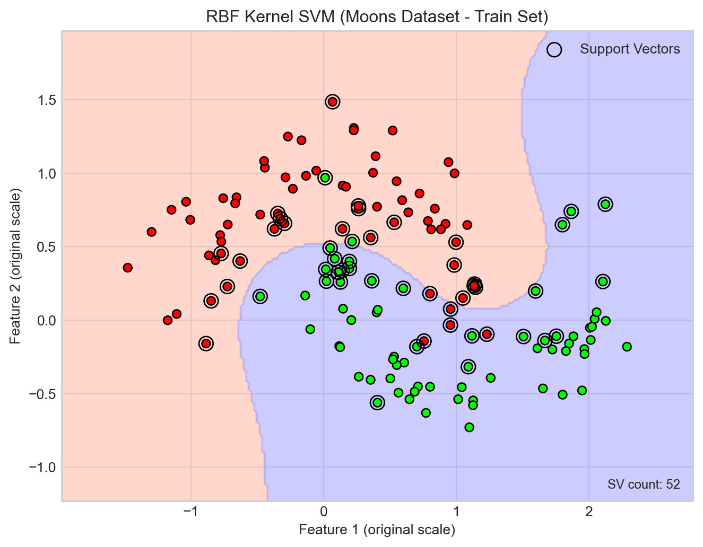

# 导入必要的库
import numpy as np
import pandas as pd
import matplotlib.pyplot as plt
import seaborn as sns
from sklearn.model_selection import train_test_split, GridSearchCV, cross_val_score
from sklearn.preprocessing import StandardScaler
from sklearn.svm import SVC
from sklearn.metrics import accuracy_score, confusion_matrix, classification_report
from sklearn.datasets import make_moons, load_iris # 使用月亮数据和鸢尾花数据
from matplotlib.colors import ListedColormap
# 设置绘图风格
plt.style.use('seaborn-v0_8-whitegrid')
sns.set_palette("viridis") # 换个色盘
# 辅助函数：绘制决策边界 (与之前章节类似，稍作调整)
def plot_svm_decision_boundary(X, y, model, scaler, title, ax, plot_support_vectors=True):
if scaler:
X_plot = scaler.transform(X) # 如果传入原始X，用scaler转换
else:
X_plot = X # 如果传入的是已经缩放的X
x_min, x_max = X[:, 0].min() - 0.5, X[:, 0].max() + 0.5
y_min, y_max = X[:, 1].min() - 0.5, X[:, 1].max() + 0.5
xx, yy = np.meshgrid(np.arange(x_min, x_max, 0.02),
np.arange(y_min, y_max, 0.02))
mesh_data_to_predict = np.c_[xx.ravel(), yy.ravel()]
if scaler:
mesh_data_to_predict = scaler.transform(mesh_data_to_predict)
Z = model.predict(mesh_data_to_predict)
Z = Z.reshape(xx.shape)
cmap_light = ListedColormap(['#FFBDAD', '#AAAAFF'])
cmap_bold_svm = ListedColormap(['#FF0000', '#0000FF', '#00FF00']) # 增加一个颜色以支持鸢尾花数据集的三分类
ax.contourf(xx, yy, Z, cmap=cmap_light, alpha=0.6)
# 绘制原始（未缩放的）数据点
ax.scatter(X[:, 0], X[:, 1], c=y, cmap=cmap_bold_svm, edgecolor='k', s=35, zorder=3)
if plot_support_vectors and hasattr(model, 'support_vectors_') and hasattr(model, 'support_'): # Ensure model.support_ exists
# model.support_ 包含了支持向量在传递给 fit 方法的训练数据中的索引。
# 函数参数 X 是已经转换回原始尺度的训练数据。
# 因此，X[model.support_] 直接给出了原始尺度下的支持向量点。
support_vector_points_on_plot = X[model.support_]
ax.scatter(support_vector_points_on_plot[:, 0], support_vector_points_on_plot[:, 1], s=100,
facecolors='none', edgecolors='k', marker='o',
linewidth=1, label='Support Vectors', zorder=4)
if hasattr(model, 'dual_coef_'): # 打印支持向量的数量
ax.text(0.98, 0.02, f'SV count: {len(model.support_vectors_)}', transform=ax.transAxes, ha='right', va='bottom', fontsize=9)
ax.set_xlim(xx.min(), xx.max())
ax.set_ylim(yy.min(), yy.max())
ax.set_title(title)
ax.set_xlabel('Feature 1 (original scale)')
ax.set_ylabel('Feature 2 (original scale)')
if plot_support_vectors and hasattr(model, 'support_vectors_'):
ax.legend(loc='upper right')支持向量机 (SVM)
学习目标
学习目标：
- 理解支持向量机 (SVM) 的核心思想：最大化分类间隔。
- 区分线性可分SVM和线性不可分SVM。
- 理解支持向量 (Support Vectors) 的概念及其在决定决策边界中的作用。
- 掌握核技巧 (Kernel Trick) 的概念，特别是多项式核和高斯径向基函数 (RBF) 核的原理和应用。
- 理解软间隔 (Soft Margin) 的概念以及正则化参数C的作用。
- 能够使用Scikit-learn实现和评估SVM分类器，并进行基本的参数调整。
5.1 SVM 的直观理解：寻找最大间隔
支持向量机 (Support Vector Machine, SVM) 是一种功能强大且用途广泛的监督学习模型，能够执行线性或非线性分类、回归，甚至是异常值检测任务。然而，它最常用于分类问题。
SVM的核心思想是找到一个能够将不同类别的样本点分得尽可能开的决策边界 (Decision Boundary)。这个”尽可能开”是通过最大化两个类别最近的样本点之间的间隔 (Margin) 来实现的。
想象一下，在二维空间中有两类点，我们想要画一条直线将它们分开。通常会有很多条直线可以做到这一点，但哪一条是最好的呢？SVM认为，最好的那条直线是离两边最近的那些点最远的那条，也就是间隔最大的那条。
 (图 5.1: SVM决策边界与最大间隔示意图。黑色实线是决策边界，虚线是间隔边界，位于间隔边界上的点是支持向量。)
在这个图中：
- 黑色实线是SVM找到的决策边界（在二维中是直线，高维中是超平面）。
- 两条虚线平行于决策边界，穿过距离决策边界最近的来自不同类别的样本点。这两条虚线之间的区域就是间隔 (Margin)。
- SVM的目标是最大化这个间隔的宽度。
- 那些位于虚线边界上的点被称为支持向量 (Support Vectors)。它们是”支撑”起这个最大间隔的样本点。如果移动这些支持向量，决策边界和间隔通常会改变。而非支持向量的移动（只要不越过间隔边界）则不会影响决策边界。
这种最大化间隔的策略使得SVM具有良好的泛化能力，因为它对数据中的噪声不那么敏感（只要噪声点不是支持向量）。
5.2 线性SVM分类
5.2.1 硬间隔分类 (Hard Margin Classification)
如果数据是严格线性可分 (strictly linearly separable) 的，即我们可以找到一个超平面将所有样本完美地分开，并且没有任何样本点位于间隔内部或错误的一侧，那么我们可以使用硬间隔分类。
决策函数可以表示为： \[ f(\mathbf{x}) = \mathbf{w}^T \mathbf{x} + b \] 其中 \(\mathbf{w}\) 是权重向量（法向量），\(b\) 是偏置项（截距）。
预测规则为：
- 如果 \(\mathbf{w}^T \mathbf{x} + b \ge 0\)，则预测类别为 +1。
- 如果 \(\mathbf{w}^T \mathbf{x} + b < 0\)，则预测类别为 -1。
为了实现最大间隔，SVM的目标是最小化 \(||\mathbf{w}||^2\) （等价于最小化 \(||\mathbf{w}||\)），同时满足约束条件： \[ y^{(i)} (\mathbf{w}^T \mathbf{x}^{(i)} + b) \ge 1 \quad \text{for all } i=1, ..., m \] 这里 \(y^{(i)}\) 是第 \(i\) 个样本的类别标签（取值为+1或-1）。这个约束确保所有样本点都正确分类并且位于间隔边界之外或之上。
硬间隔分类的问题：
- 仅适用于线性可分数据： 如果数据不是线性可分的，就找不到这样的硬间隔。
- 对异常值非常敏感： 如下图所示，一个异常点就可能导致决策边界发生巨大变化，使得间隔变得非常小，从而影响模型的泛化能力。
 (图 5.2: 硬间隔SVM对异常值的敏感性。左图：无异常点时的最大间隔。右图：加入一个异常点后，硬间隔SVM被迫选择一个间隔很小的决策边界。)
5.2.2 软间隔分类 (Soft Margin Classification)
为了解决硬间隔分类的问题，并使其能够处理线性不可分的数据和异常值，引入了软间隔分类。
软间隔分类允许一些样本点违反间隔 (margin violation)，即它们可以位于间隔内部，甚至在错误的一侧。但是，它会对这些违反间隔的样本点施加一定的惩罚。
这是通过在优化目标中引入一个正则化参数 C (通常称为惩罚参数) 和松弛变量 (slack variables) ξ (xi) 来实现的。
优化目标变为：最小化 \[ \frac{1}{2} ||\mathbf{w}||^2 + C \sum_{i=1}^{m} \xi^{(i)} \] 同时满足约束条件： \[ y^{(i)} (\mathbf{w}^T \mathbf{x}^{(i)} + b) \ge 1 - \xi^{(i)} \quad \text{and} \quad \xi^{(i)} \ge 0 \quad \text{for all } i=1, ..., m \]
- \(\xi^{(i)}\) 是第 \(i\) 个样本的松弛变量，表示该样本违反间隔的程度。
- 如果 \(\xi^{(i)} = 0\)，则样本被正确分类且在间隔之外或之上。
- 如果 \(0 < \xi^{(i)} \le 1\)，则样本被正确分类但位于间隔内部。
- 如果 \(\xi^{(i)} > 1\)，则样本被错误分类。
- 参数
C控制了间隔宽度和间隔违例数量之间的权衡：- 较小的
C值： 导致更宽的间隔，但允许更多的间隔违例。模型对个别数据点的错误分类容忍度更高，倾向于更简单的决策边界（可能导致欠拟合，高偏差）。 - 较大的
C值： 试图最小化间隔违例的数量，导致间隔更窄。模型对错误分类的容忍度较低，可能导致更复杂的决策边界，更容易受到噪声影响（可能导致过拟合，高方差）。
- 较小的
 (图 5.3: 软间隔SVM中不同C值的影响。左图：C值较小 (C=0.1)，间隔较宽，容忍一些间隔违例。右图：C值较大 (C=100)，间隔较窄，试图正确分类更多点，对间隔违例的惩罚更大。)
在Scikit-learn中，SVC 类的 C 参数就是这个正则化参数。默认值通常是 C=1.0。
5.3 非线性SVM分类：核技巧
线性SVM在许多情况下都表现良好，但很多真实世界的数据集并不是线性可分的。
一种处理非线性数据的方法是添加多项式特征。例如，对于一个一维特征 \(x_1\)，我们可以添加一个新特征 \(x_2 = (x_1)^2\)。这样，原本在一维空间中线性不可分的数据，在新的二维空间 \((x_1, x_2)\) 中可能就变得线性可分了。
 (图 5.4: 使用多项式特征处理非线性数据。左图：一维非线性数据。右图：通过添加平方项x₁²，数据在二维特征空间(x₁, x₁²)中变得线性可分。)
然而，显式地添加高阶多项式特征（或其他复杂特征转换）有几个问题：
- 计算成本高： 如果原始特征数量很多，或者多项式的阶数很高，转换后的特征数量会急剧增加（组合爆炸），导致训练非常缓慢。
- 难以选择合适的转换： 不知道哪种特征转换最有效。
5.3.1 核技巧 (The Kernel Trick)
核技巧是SVM中一个非常优雅的数学方法，它允许我们在高维特征空间中进行计算，而无需显式地计算数据点在该高维空间中的坐标。换句话说，它可以在不实际创建新特征的情况下，得到与在高维空间中训练线性SVM相同的效果。
这是因为SVM算法（在其对偶形式中）的计算实际上只依赖于样本点之间的内积 (dot product)。
一个核函数 (Kernel Function) \(K(\mathbf{a}, \mathbf{b})\) 计算的是原始特征空间中两个样本点 \(\mathbf{a}\) 和 \(\mathbf{b}\) 经过某个非线性映射 \(\phi(\cdot)\) 到高维特征空间后的内积： \[ K(\mathbf{a}, \mathbf{b}) = \phi(\mathbf{a})^T \phi(\mathbf{b}) \]
我们不需要知道映射函数 \(\phi(\cdot)\) 的具体形式，也不需要计算 \(\phi(\mathbf{a})\) 和 \(\phi(\mathbf{b})\)，只需要能够计算核函数 \(K(\mathbf{a}, \mathbf{b})\) 的值即可。
5.3.2 常用核函数
线性核 (Linear Kernel): \[ K(\mathbf{a}, \mathbf{b}) = \mathbf{a}^T \mathbf{b} \] 这实际上就是标准的线性SVM，没有进行空间映射。 在Scikit-learn中，设置
kernel="linear"。多项式核 (Polynomial Kernel): \[ K(\mathbf{a}, \mathbf{b}) = (\gamma \mathbf{a}^T \mathbf{b} + r)^d \]
d是多项式的阶数 (degree)。γ(gamma) 是一个缩放参数。r(coef0) 是一个常数项系数。 如果d较大，可以拟合非常复杂的决策边界，但也容易过拟合。 在Scikit-learn中，设置kernel="poly"，并调整degree，gamma，coef0参数。
高斯径向基函数核 (Gaussian RBF Kernel): \[ K(\mathbf{a}, \mathbf{b}) = \exp(-\gamma ||\mathbf{a} - \mathbf{b}||^2) \]
γ(gamma) 是一个重要的参数。它定义了单个训练样本的影响范围：- 较小的
γ值： 意味着影响范围大，决策边界更平滑，可能导致欠拟合。 - 较大的
γ值： 意味着影响范围小，每个点的影响更局部化，决策边界更不规则，对数据点更敏感，可能导致过拟合。 RBF核非常灵活，可以创建复杂的非线性决策边界。它实际上是将样本映射到一个无限维的空间。 在Scikit-learn中，设置kernel="rbf"，并调整gamma(和C) 参数。这是SVC类的默认核。
- 较小的
Sigmoid 核 (Sigmoid Kernel): \[ K(\mathbf{a}, \mathbf{b}) = \tanh(\gamma \mathbf{a}^T \mathbf{b} + r) \] 其行为类似于两层的感知机神经网络。 在Scikit-learn中，设置
kernel="sigmoid"。
 (图 5.5: 使用不同核函数的SVM决策边界。左：线性核。中：多项式核 (degree=3)。右：RBF核。可以看出，多项式核和RBF核可以处理非线性可分的数据。)
选择核函数和调整参数：
- 经验法则： 通常先尝试线性核。如果数据非常复杂，或者线性核表现不佳，再尝试RBF核，它通常是一个很好的默认选择。多项式核在某些特定情况下可能表现好，但如果阶数过高，训练会很慢且容易过拟合。
- 交叉验证和网格搜索： 是选择核函数类型和调整其超参数（如
C，gamma，degree）的最佳方法。
5.3.3 gamma 参数的影响 (RBF核)
对于RBF核 \(K(\mathbf{a}, \mathbf{b}) = \exp(-\gamma ||\mathbf{a} - \mathbf{b}||^2)\)，gamma (\(\gamma\)) 参数控制了单个训练样本的影响范围。
- 小的
gamma值： 高斯曲线更宽，单个样本的影响范围更大，决策边界更平滑。如果gamma太小，模型可能过于简单，导致欠拟合。 - 大的
gamma值： 高斯曲线更窄，单个样本的影响范围更小，决策边界更不规则，会紧密地围绕数据点。如果gamma太大，模型可能过于复杂，对训练数据中的噪声敏感，导致过拟合。
 (图 5.6: RBF核中不同gamma值的影响。左：gamma=0.1，边界较平滑。右：gamma=10，边界非常不规则，紧密围绕数据点，可能过拟合。)
5.4 SVM 的优缺点
优点：
- 在高维空间中非常有效： 即使特征维度高于样本数量，SVM仍然有效。
- 内存效率高： 因为它只使用训练点的一个子集（支持向量）来进行决策。
- 通用性强： 可以通过不同的核函数选择来适应不同的数据和问题，处理线性和非线性问题。
- 鲁棒性： 由于最大化间隔，对异常值（非支持向量）不敏感（尤其是在软间隔和合适C值的情况下）。
- 理论基础坚实： 基于统计学习理论中的VC维(Vapnik-Chervonenkis dimension)理论[Vapnik, 1995]，具有严格的数学推导和泛化误差上界保证。该理论为SVM的泛化性能提供了理论保障。
缺点：
- 对参数选择敏感： 核函数的选择及其超参数（如
C和gamma）对性能影响很大，通常需要仔细调优。 - 训练时间长： 对于非常大的数据集，训练时间可能会很长，因为核函数的计算复杂度可能较高（例如，与样本数量成平方关系）。
- 可解释性较差： 特别是使用非线性核时，模型的决策边界不像线性模型或决策树那样直观易懂。
- 对特征缩放敏感： 与KNN类似，由于涉及到距离计算（隐式地通过核函数），建议在使用SVM之前对特征进行缩放。
- 不直接提供概率估计： Scikit-learn中的SVM可以通过Platt scaling等方法进行校准以输出概率，但这会增加计算成本。
5.5 使用 Scikit-learn 实现 SVM
我们将使用Scikit-learn库中的 SVC (Support Vector Classifier) 类来实现SVM。
5.5.1 线性SVM示例 (鸢尾花数据集，两类)
为了简单起见，我们先用鸢尾花数据集的前两个特征，并且只区分两个类别（例如，setosa vs versicolor）。
# 加载鸢尾花数据
iris = load_iris()
X_iris_all = iris.data
y_iris_all = iris.target
# 只取前两个特征，并只选择类别0和类别1
X_iris_linear = X_iris_all[(y_iris_all==0) | (y_iris_all==1), :2]
y_iris_linear = y_iris_all[(y_iris_all==0) | (y_iris_all==1)]
# 特征缩放
scaler_iris_linear = StandardScaler()
X_iris_linear_scaled = scaler_iris_linear.fit_transform(X_iris_linear)
# 划分训练集和测试集
X_train_lin, X_test_lin, y_train_lin, y_test_lin = train_test_split(
X_iris_linear_scaled, y_iris_linear, test_size=0.3, random_state=42, stratify=y_iris_linear
)
# 创建线性SVM模型
linear_svm_clf = SVC(kernel="linear", C=1.0) # C=1.0 是一个常用的默认值
linear_svm_clf.fit(X_train_lin, y_train_lin)
# 预测与评估
y_pred_lin_svm = linear_svm_clf.predict(X_test_lin)
accuracy_lin_svm = accuracy_score(y_test_lin, y_pred_lin_svm)
print("线性SVM (鸢尾花两类，前两特征):")
print(f"准确率: {accuracy_lin_svm:.4f}")
print("\n混淆矩阵:")
print(confusion_matrix(y_test_lin, y_pred_lin_svm))
print("\n分类报告:")
print(classification_report(y_test_lin, y_pred_lin_svm))
# 绘制决策边界 (在原始未缩放数据上绘制，但在内部使用缩放数据进行预测)
fig, ax = plt.subplots(figsize=(8, 6))
# 为了在原始尺度上绘制，需要将scaler和原始数据传入
plot_svm_decision_boundary(scaler_iris_linear.inverse_transform(X_train_lin), y_train_lin,
linear_svm_clf, scaler_iris_linear,
'Linear SVM Decision Boundary (Iris, 2 classes, 2 features - Train Set)', ax)
plt.show()线性SVM (鸢尾花两类，前两特征):
准确率: 1.0000
混淆矩阵:
[[15 0]
[ 0 15]]
分类报告:
precision recall f1-score support
0 1.00 1.00 1.00 15
1 1.00 1.00 1.00 15
accuracy 1.00 30
macro avg 1.00 1.00 1.00 30
weighted avg 1.00 1.00 1.00 30

5.5.2 非线性SVM示例 (RBF核，月亮数据集)
月亮数据集是一个经典的非线性二分类数据集。
# 生成月亮数据
X_moons_svm, y_moons_svm = make_moons(n_samples=200, noise=0.2, random_state=42)
# 特征缩放
scaler_moons = StandardScaler()
X_moons_svm_scaled = scaler_moons.fit_transform(X_moons_svm)
# 划分训练集和测试集
X_train_rbf, X_test_rbf, y_train_rbf, y_test_rbf = train_test_split(
X_moons_svm_scaled, y_moons_svm, test_size=0.3, random_state=42, stratify=y_moons_svm
)
# 创建RBF核SVM模型
# C 和 gamma 是重要的超参数，通常需要调优
rbf_svm_clf = SVC(kernel="rbf", C=1.0, gamma=0.5) # gamma可以设为'scale'或'auto'或具体数值
rbf_svm_clf.fit(X_train_rbf, y_train_rbf)
# 预测与评估
y_pred_rbf_svm = rbf_svm_clf.predict(X_test_rbf)
accuracy_rbf_svm = accuracy_score(y_test_rbf, y_pred_rbf_svm)
print("\n非线性SVM (RBF核，月亮数据集):")
print(f"参数: C={rbf_svm_clf.C}, gamma={rbf_svm_clf.gamma}")
print(f"准确率: {accuracy_rbf_svm:.4f}")
print("\n混淆矩阵:")
print(confusion_matrix(y_test_rbf, y_pred_rbf_svm))
print("\n分类报告:")
print(classification_report(y_test_rbf, y_pred_rbf_svm))
# 绘制决策边界
fig, ax = plt.subplots(figsize=(8, 6))
plot_svm_decision_boundary(scaler_moons.inverse_transform(X_train_rbf), y_train_rbf,
rbf_svm_clf, scaler_moons,
'RBF Kernel SVM (Moons Dataset - Train Set)', ax)
plt.show()
非线性SVM (RBF核，月亮数据集):
参数: C=1.0, gamma=0.5
准确率: 0.9500
混淆矩阵:
[[28 2]
[ 1 29]]
分类报告:
precision recall f1-score support
0 0.97 0.93 0.95 30
1 0.94 0.97 0.95 30
accuracy 0.95 60
macro avg 0.95 0.95 0.95 60
weighted avg 0.95 0.95 0.95 60

5.5.3 使用GridSearchCV进行参数调优
SVM的性能高度依赖于超参数 C 和 gamma (对于RBF核) 或 degree (对于多项式核)。我们可以使用 GridSearchCV 来寻找最佳参数组合。
# 使用完整的鸢尾花数据集 (4个特征，3个类别) 进行多分类SVM调优
X_iris_full_scaled = StandardScaler().fit_transform(X_iris_all)
y_iris_full = y_iris_all
X_train_full, X_test_full, y_train_full, y_test_full = train_test_split(
X_iris_full_scaled, y_iris_full, test_size=0.3, random_state=42, stratify=y_iris_full
)
# 定义参数网格
param_grid_svm = {
'C': [0.1, 1, 10, 100],
'gamma': [0.001, 0.01, 0.1, 1, 'scale', 'auto'],
'kernel': ['rbf', 'poly'] # 可以尝试不同的核
}
# 多项式核可能还需要degree参数，可以分开搜索或构建更复杂的网格
# param_grid_poly = {
# 'C': [0.1, 1, 10],
# 'degree': [2, 3, 4],
# 'gamma': ['scale', 'auto'],
# 'kernel': ['poly']
# }
print("\n开始使用GridSearchCV为SVM调优 (鸢尾花完整数据集)...")
svm_grid_search = GridSearchCV(SVC(random_state=42), param_grid_svm, cv=5, scoring='accuracy', verbose=1, n_jobs=-1)
svm_grid_search.fit(X_train_full, y_train_full)
print("\n最佳参数组合:")
print(svm_grid_search.best_params_)
print(f"最佳交叉验证准确率: {svm_grid_search.best_score_:.4f}")
# 使用最佳参数评估模型
best_svm_clf = svm_grid_search.best_estimator_
y_pred_best_svm = best_svm_clf.predict(X_test_full)
accuracy_best_svm = accuracy_score(y_test_full, y_pred_best_svm)
print("\n最佳SVM模型在测试集上的性能:")
print(f"准确率: {accuracy_best_svm:.4f}")
print("\n混淆矩阵:")
print(confusion_matrix(y_test_full, y_pred_best_svm))
print("\n分类报告:")
print(classification_report(y_test_full, y_pred_best_svm))
# 如果最佳模型是RBF或Poly核，并且我们用了前两个特征，可以尝试可视化
# 由于这里使用了全部4个特征，直接绘制2D决策边界不合适
# 但我们可以展示GridSearchCV找到的最佳参数
print(f"\nGridSearchCV找到的最佳SVM模型: {best_svm_clf}")
开始使用GridSearchCV为SVM调优 (鸢尾花完整数据集)...
Fitting 5 folds for each of 48 candidates, totalling 240 fits
最佳参数组合:
{'C': 1, 'gamma': 0.1, 'kernel': 'rbf'}
最佳交叉验证准确率: 0.9810
最佳SVM模型在测试集上的性能:
准确率: 0.9111
混淆矩阵:
[[15 0 0]
[ 0 14 1]
[ 0 3 12]]
分类报告:
precision recall f1-score support
0 1.00 1.00 1.00 15
1 0.82 0.93 0.88 15
2 0.92 0.80 0.86 15
accuracy 0.91 45
macro avg 0.92 0.91 0.91 45
weighted avg 0.92 0.91 0.91 45
GridSearchCV找到的最佳SVM模型: SVC(C=1, gamma=0.1, random_state=42)这段代码会尝试 param_grid_svm 中定义的所有参数组合，并通过5折交叉验证找到在训练集上表现最好的组合。然后用这个最佳模型在测试集上进行评估。
5.6 本章小结
本章深入探讨了支持向量机 (SVM)，一种强大而灵活的分类算法。核心内容包括：
- 最大间隔思想： SVM旨在找到一个能将不同类别以最大可能间隔分开的决策超平面，这赋予了它良好的泛化能力。
- 支持向量： 那些位于或穿过间隔边界的样本点，它们是决定决策边界的关键。
- 线性SVM： 包括严格要求数据线性可分的硬间隔分类，以及通过引入松弛变量和正则化参数
C来处理轻微不可分数据和异常值的软间隔分类。参数C控制了间隔宽度和间隔违例之间的平衡。 - 非线性SVM与核技巧： 通过核函数（如多项式核、RBF核），SVM可以在高维特征空间中有效地找到非线性决策边界，而无需显式地进行特征转换，避免了计算复杂性。RBF核的
gamma参数控制了单个样本的影响范围。 - 参数调优： SVM的性能对核函数选择及其超参数（如
C,gamma,degree）非常敏感，通常需要使用交叉验证和网格搜索等方法进行调优。
通过Scikit-learn的实践，我们学习了如何实现线性和非线性SVM，如何进行特征缩放，以及如何利用GridSearchCV寻找最优模型参数。SVM虽然训练时间可能较长且可解释性不如某些模型，但其在许多分类任务中（尤其是高维数据和复杂边界问题）表现出色。
5.7 思考与练习
5.7.1 基础练习
- 核心概念：
- 什么是”最大间隔”？为什么SVM试图最大化它？
- 什么是”支持向量”？它们在SVM中扮演什么角色？
- 硬间隔SVM和软间隔SVM的主要区别是什么？软间隔中的参数
C起什么作用？ - 解释核技巧的基本思想。为什么它在处理非线性数据时很有用？
- 参数理解：
- 对于RBF核SVM，参数
gamma如何影响决策边界的形状？gamma过大或过小分别可能导致什么问题？ - 参数
C和gamma之间是否存在某种交互影响？（例如，当C很大时，gamma的调整是否更敏感？）
- 对于RBF核SVM，参数
- 算法对比：
- 比较SVM与逻辑回归。它们在处理线性和非线性问题、对异常值的敏感性、计算复杂度等方面有何不同？
- 比较SVM与KNN。两者都对特征缩放敏感吗？它们在”训练”阶段做什么？
5.7.2 编码与实践
- 数据集选择与预处理：
- 选择一个你熟悉的其他分类数据集（例如，Scikit-learn内置的
load_breast_cancer()或load_digits()）。 - 对数据进行适当的预处理，包括特征缩放和训练集/测试集划分。
- 选择一个你熟悉的其他分类数据集（例如，Scikit-learn内置的
- 线性SVM实践：
- 在该数据集上训练一个线性SVM (
kernel='linear')。 - 尝试不同的
C值（例如，0.01, 0.1, 1, 10, 100），观察其对模型性能（如准确率、支持向量数量）的影响。可以通过交叉验证来评估。
- 在该数据集上训练一个线性SVM (
- RBF核SVM实践：
- 在该数据集上训练一个使用RBF核的SVM。
- 使用
GridSearchCV同时调整C和gamma参数，找到最优组合。 - 分析找到的最佳参数，并评估最终模型在测试集上的性能（准确率、混淆矩阵、分类报告）。
- 多项式核SVM实践（可选）：
- 尝试使用多项式核 (
kernel='poly')，并调整degree、C、gamma和coef0。 - 比较其性能与RBF核SVM的性能。
- 尝试使用多项式核 (
- 可视化（如果数据集特征较少）：
- 如果你的数据集只有两个特征（或者你选择了两个主要特征），尝试可视化不同参数（如不同的
C和gamma值，或不同核函数）下的决策边界。
- 如果你的数据集只有两个特征（或者你选择了两个主要特征），尝试可视化不同参数（如不同的
5.7.3 推荐阅读
- 《An Introduction to Statistical Learning (with Applications in R or Python)》 - Chapter 9: Support Vector Machines: (ISLR/ISLP) 提供了对SVM清晰且深入的讲解。(https://www.statlearning.com/)
- Scikit-learn官方文档 - Support Vector Machines: (https://scikit-learn.org/stable/modules/svm.html) 包含了详细的API说明和用户指南。
- StatQuest with Josh Starmer - Support Vector Machines (Parts 1-4): (YouTube频道) 用非常直观的方式解释了SVM的各个方面，包括间隔、核技巧等。
- CS229 (Andrew Ng) - Support Vector Machines: (https://see.stanford.edu/materials/aimlcs229/cs229-notes3.pdf) 更偏数学理论的SVM笔记。